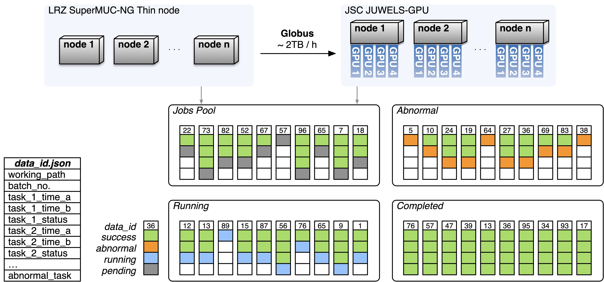
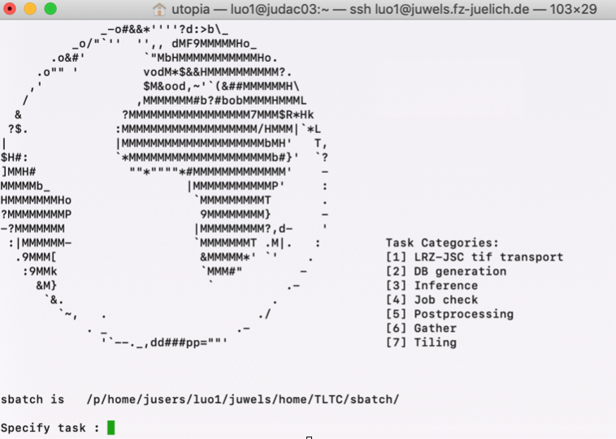
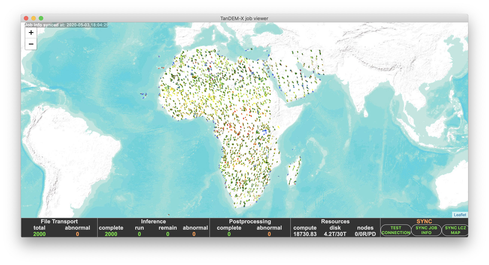

Consider a high-performance computing (HPC) orchestration challenge: executing deep learning inference across a massive dataset of 20,000 high-resolution images. Each payload is roughly 1 GB, with an estimated processing time of 1.5 GPU-hours per image. Orchestrating this distributed workload implies navigating the following severe infrastructural constraints:
This scenario reflects a critical bottleneck encountered during a large-scale deep learning initiative. Off-the-shelf orchestration tools fall short when handling massive, fine-grained job arrays under such asymmetric storage and scheduling constraints. The core engineering complexities involve: (1) capturing granular execution states (identifying specific data corruption, tracking abnormal process terminations, or verifying successful completions for each "mini-job"), and (2) dynamically managing runtime parameter injection within monolithic Slurm batch scripts. To resolve this, I designed and implemented a decoupled, highly automated state-machine toolchain to streamline mass-scale array execution.
In this article, I present a brief technical overview of the architectural design patterns used to bypass these infrastructure bottlenecks.
To monitor states across thousands of asynchronous tasks, establishing a reliable state-management layer is paramount. Traditional relational databases (SQL) are highly impractical in this context, as most Tier-0 HPC environments restrict inbound/outbound cross-node SSH connections and lack centralized database access layers for compute nodes.
To circumvent this network isolation, I engineered a serverless, directory-and-file-based NoSQL-like state engine using atomic JSON manifests. Each mini-job maps to an isolated JSON document containing its task parameters. State transitions (e.g., Pending, Running, Completed, Failed) are executed by atomically moving these manifests across dedicated directory pools.
This decoupled design inherently solves the dynamic parameter-injection bottleneck. Instead of statically hardcoding parameters at submission time, the runtime Python application on the worker nodes autonomously polls for and acquires an exclusive file lock on an available JSON task from the active pool. By encapsulating this consumer loop within a 24-hour Slurm allocation—running across 4 GPUs per allocation—submitting the maximum of 20 identical, static Slurm batch scripts orchestrates up to 80 parallel tensor pipelines simultaneously without additional scheduling or metadata overhead.

The complete end-to-end execution lifecycle involves high-throughput data migration via Globus, state database initialization, parallel computation execution, and post-processing aggregation. Adhering to an automation-first engineering methodology, I developed a server-side workflow daemon written in C, featuring a lean interface to manage parameter-driven task execution and background staging.
The controller schedules staggered, automated data ingestions (staging 1,000 images per batch) to continuously balance the compute cluster’s 5 TB storage quota. The entire 20 TB ingestion pipeline runs asynchronously in the background across 20 automated iterations, completely eliminating manual synchronization overhead.

To gain real-time visibility into cluster utilization and job lifecycles, I constructed a client-side telemetry viewer.

Engineered as an agile architectural prototype during a compressed two-week sprint, this toolchain successfully transformed a high-latency, manual operations nightmare into a resilient, high-throughput production pipeline. The underlying design pattern—decoupling cluster state management into file-based atomic transactions—offers a portable and elegant paradigm for orchestrating massive distributed job arrays across any resource-constrained HPC infrastructure.
Created by Cong L. in 2020.